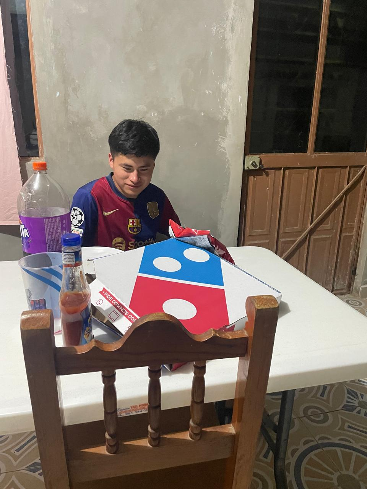

¡Cuida tu cuerpo, alimenta tu mente y mejora tu calidad de vida!
CAMBIA TUS HÁBITOS, MEJORA TUS COSTUMBRES PARA UNA VIDA SALUDABLE
En un mundo donde el estrés y el ritmo acelerado afectan nuestra salud, adoptar hábitos saludables es esencial.
A través de una buena alimentación, ejercicio, descanso y salud emocional, podemos alcanzar un equilibrio que nos permita vivir con energía, paz y alegría.
¿Qué es un hábito saludable?
Un hábito saludable es una acción que realizamos de forma constante que contribuye a mejorar nuestra salud física, mental o emocional.
Desayunar todos los días
Tomar suficiente agua
Realizar ejercicio regularmente
Evitar fumar o consumir alcohol
Mantener una actitud positiva
¿Qué son los hábitos y estilos de vida saludables?
Son prácticas regulares que promueven una vida sana y feliz. Incluir buenos hábitos ayuda a prevenir enfermedades y mantener la mente enfocada.
Comer saludable
Actividad física diaria
Actitud positiva
Control del estrés
Buen descanso
Hábitos para una vida saludable
¿Qué es saludable comer?
Frutas y verduras frescas
Granos integrales
Proteínas magras
Agua natural
Actividad física recomendada
La actividad física fortalece músculos, huesos, mejora el estado de ánimo y reduce el estrés.
60 minutos de actividad diaria
Caminar, trotar, nadar
Deportes en equipo
Ejercicios de fuerza y flexibilidad
Actividades que deben limitarse

Evitar sedentarismo
Reducir uso excesivo de dispositivos
Evitar ambientes tóxicos
Limitar alimentos poco saludables
Activación Física - Zumba
Colaboración con cuarto semestre
Recuerda: adoptar hábitos saludables hoy es invertir en tu bienestar y felicidad del mañana.